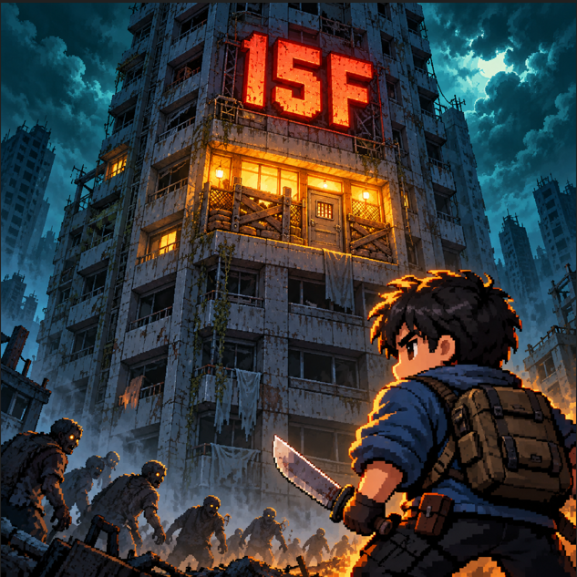
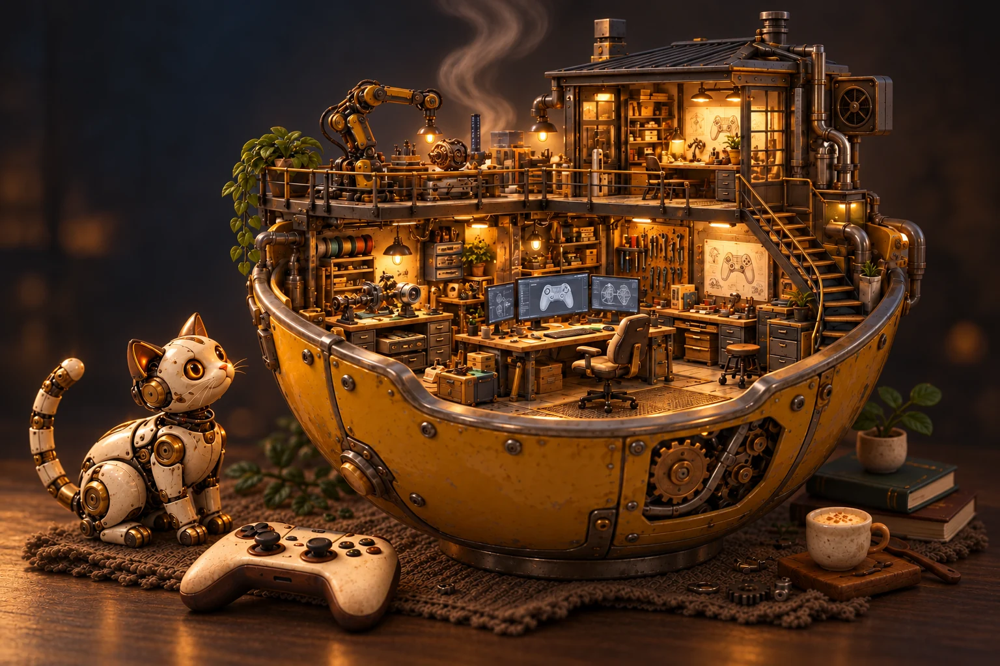

残楼15F · 游戏封面残楼15F
楼还没倒，生活就得继续。
一栋危楼，十五层未知。围绕垂直空间展开探索，在有限的物资、危险与生存抉择之间，为自己争取多一天的可能。
前往 TapTap 查看与下载测试资格、支持设备与下载方式，以 TapTap 页面为准。
小小工作室，大大的好奇心
我们是薛定谔的粥，一个独立游戏工作室。
在玩法里放一点意外，在世界里留一点余温。
慢慢打磨，直到一个点子值得你亲自走进去。

01 / ON THE STOVE
从一个念头，到一个可以探索的世界。
先来看看我们正在制作的游戏。

残楼15F · 游戏封面楼还没倒，生活就得继续。
一栋危楼，十五层未知。围绕垂直空间展开探索，在有限的物资、危险与生存抉择之间，为自己争取多一天的可能。
前往 TapTap 查看与下载测试资格、支持设备与下载方式，以 TapTap 页面为准。
02 / THE PEOPLE BEHIND THE POT
我们喜欢那些有点奇怪、却让人忍不住想试一试的念头。把它做成原型，再通过一次次试玩，找到真正让人投入的部分。
比起堆满屏幕的内容，我们更在意一个选择的分量、一处场景的情绪，以及退出游戏后，你还会想起的某个瞬间。
来聊聊你的想法从一个清晰的机制开始。尝试、试玩、调整，让每次交互都有回应，让每个选择都有意义。
用画面、声音和节奏讲同一个故事。让氛围成为体验的一部分，而不只是背景。
保留独立创作的自由，也珍惜玩家的真实感受。在持续迭代里，让作品一点点接近最初的想象。
来自工作室的
一张小纸条
03 / WHY THIS NAME?
锅盖打开之前，你不知道这锅粥会是什么味道。游戏也是一样：一个奇怪的点子，可能很好玩，也可能需要推倒重来。
所以我们不停尝试，慢慢熬，认真搅拌。直到揭开盖子时，能把一款值得玩的游戏，端到你面前。
保持好奇，记得开火。 — 薛定谔的粥04 / SAY HELLO
试玩反馈、发行合作、媒体交流，或者只是聊聊游戏。
欢迎把你的想法写给我们。